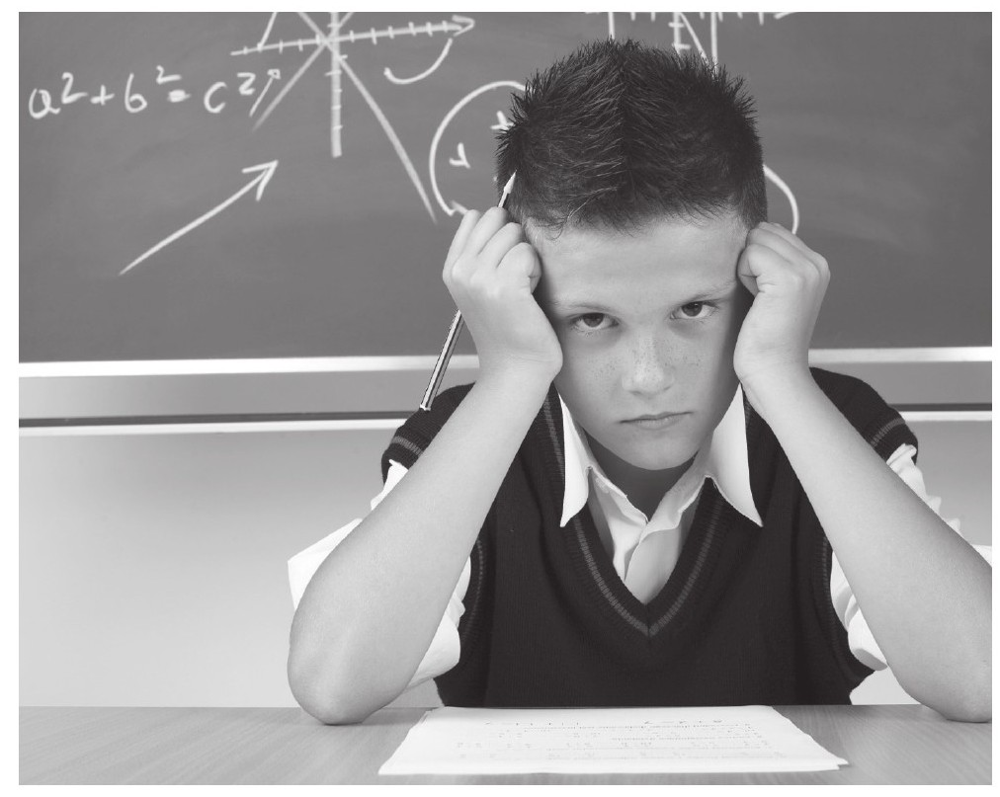
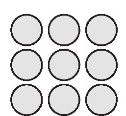
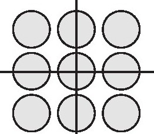
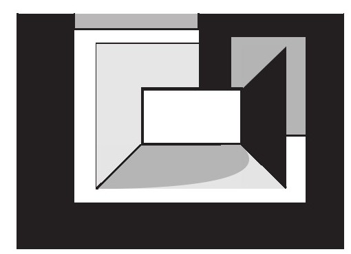
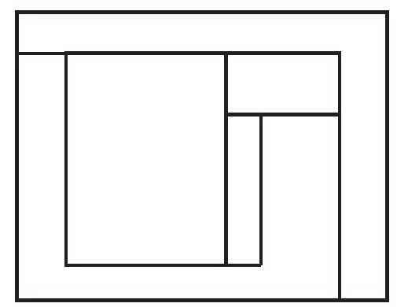

在我刚刚到达加州后不久，我发现了一种奇特现象，足以使我相信它对学校教育具有严重干扰歪曲作用。这个现象就起源于加州当地，当然现在已经传遍了整个美国，这就是被称为“数学教育纷争”[1]的一场毫无意义且相当激烈的有关数学教育模式的争论。这场纷争的一个直接结果就是，那些优秀的老师在极端抗议者的恐吓下被迫离职；另一个直接结果就是，任何有关数学教育改革的疑问和讨论都被有关部门禁止，任何有关改善当前教育的方案均被废止。
更有讽刺意味的是，此次的数学教育纷争的主题是“课堂教学应该使用哪种类型的数学教材”。目前在市面上有两种版本的教材供学校选用，一种是传统教材，另一种是改良版教材。这两种版本的教材讲授的都是同样的课程内容，唯一区别是改良版的教材以一种更为易懂的方式将知识点讲解出来，其内容通常以某种实际问题为背景，将相关知识引入，给人感觉更为接地气一些。
以“变量”这一概念为例，改良版的数学教材在引领学生将实际问题转换为数学化的表述之前，先将“变量”这一核心数学概念引入。而且在指导实际学习应用的过程中，改良版教材给予学生们充分的自由去探索与核心内容“变量”有关的任何问题，并向学生介绍数学概念是如何与实际问题相结合的。而与之形成对比的是，传统数学教材所采用的模式是在章节首页一股脑地将本章所涉及的数学概念全部列出，然后在章节剩余的75页全部是供学生使用的练习题。在引导学生对于“变量”等重要数学概念及方法深入认识这一问题上，改良版的数学教材更加偏重于对概念与方法的理解，不太侧重于题目的练习。而传统数学教材则更倾向于让学生去做更多的练习题。这正是“战争中”两方阵营争论的关键所在，其中一方认为应该将大量的时间放在做练习题上面，而另一方则认为对于数学概念是否理解透彻要比做练习题更重要也更有效。
的确我们不能否认一本优秀的教材对于学生学习的重要性，高质量的教材往往是学生们顺利掌握知识的必要条件之一，但是在经过反复的对比研究后我们发现，在课堂上对教学效率起着决定性作用的是老师的教学水平而并非教材的水准。[2][3][4][5]那些水平优秀的数学老师，即使在课堂教学中采用的是一本枯燥无味的数学教材，他们依然能够把这堂数学课讲得生动有趣，而那些水平较差的数学老师却无法依靠一本优秀的教材来提升自身的教学水平。如果老师的教学水平以及教学方法存在问题的话，即便去使用改良版的数学教材，最终的教学效果依然会收效甚微。仅仅把目光放在教材如何编写上面的那群人，如果能够对数学家的工作方式多少有一些了解的话，我们就不必面临当前的教育危机了，更不用说发动一场让人啼笑皆非的“数学教育战争”了。
好的数学老师会向学生提供很多具有锻炼价值的数学问题，引导并激发学生对于数学的学习兴趣，给予他们充分的机会与空间来挑战这些数学问题，而不仅仅是照本宣科去讲解那些程式化的方法。而传统的数学教学模式下，老师站在讲台上花费20至30分钟的时间证明定理及方法，学生则在下边将老师的板书抄在自己的笔记本上面，然后再通过反复练习相同的题型来巩固之前学到的数学方法。这种课堂上所训练出的学生往往会认为数学学习不需要经由大脑思考，只需要盯着老师的板书并且把内容完整地抄下来再记牢就可以把数学学好了。
在对数百名经历过这种数学课堂教学的学生的走访中，当我向他们询问什么才是学好数学的关键因素时，我几乎得到了完全相同的回复：集中注意力。就像其中一位接受采访的女学生所说的：“数学课只需要去记忆就可以，而其他课程则需要你动脑筋思考。”
事实上，学生的问题在于他们通过一种被动的方式学习并去记忆相关数学方法，而不是以提问、探索的自主方式来掌握数学方法。我走访过的学生，在回顾自己的学习经历后说：“我对数学学习并不感兴趣，往往是你告诉我一个数学公式，我会去努力记住它并学会如何使用它，仅此而已。”有时还会这样说：“有时你不得不去接受这样的一个事实，那就是在数学世界里，事情往往并不会向你所想象的那样发展，解答每一个数学问题都会有相应的切入点和知识点，而你必须做的就是接受并记住这些套路，并在掌握这些套路的前提下来解题，否则就会得到错误答案。”
如果一直以这种被动的学习方式对学生展开教学的话，就会使学生缺少“提出、假设、分析、思考并解答问题”这一连串的实际能力（这对于锻炼学生在生活中处理实际数学问题的能力至关重要）。这种教育的直接后果就是学生缺乏自己主动上手去处理实际问题的能力。而这种效率极低的被动式数学教育作为美国式教育的一大典型特征至今仍在全国范围内被广泛普及着。
在这种被动式数学教育模式背景下，学生们需要记忆数以百计的解题方法，而每当方法变换为一种新的模式形态时（也就是我们通常所说的变换题型），学生们往往就会感到手足无措，这也就间接导致了他们数学成绩的不理想以及在生活中面对数学问题时不免会产生恐惧感。只有少数能够很好驾驭数学的人才知道这样一个诀窍：在数学学习中，真正需要去记忆的东西其实很少，大多数的数学问题都可以通过对数学概念的理解并结合主观能动性的推理来得以解答。
“当我在学习数学时，我保证会用心来解答每一道数学题。”在最近的一次国际数学学习调查中，对于这样的一个观点，来自40个国家的学生被要求回答同意与否。这一观点的核心直指被动式数学教育所展现出来的本质上的缺陷，这也恰恰是我们所不愿意看到的。在40个国家中，平均有65%的学生对于该问题持否定意见。出乎意料的是，约有67%的美国学生对于该问题做出了肯定回答，这其中可能涉及的一个原因就是，美国目前在各方面均处于世界领先水平，但是唯有数学水平如此之低实在是让人难以接受，所以学生们出于自尊心而做出了肯定回答。[6]
我与自己的研究生团队花费了上千个小时的时间，通过各种侧面来了解学生们的数学学习情况。在我们制定的教学方案中涉及许多教学模块的内容，这其中就包括：在课堂上旁听数百小时的数学课程；询问学生们的听课感受并予以记录；请学生们填写关于数学信仰方面的调查问卷；对学生们的数学理解能力进行评估……
通过观察学生们在数学课堂上的表现而得到的反馈结果是：由于课堂缺乏气氛，讲课内容晦涩难懂，使学生对数学学习漠不关心，甚至对他们的心理健康产生了消极影响。在数以百计接受被动式数学教育的学生访谈中，我了解到在这种数学课堂上，思考通常被认为是多余的环节，甚至有时不被允许。这类教育的典型特征就是学生们必须且只需记住老师所讲授的内容就圆满完成任务了。学生们也因此下意识地去死记硬背老师在课堂上所讲解的那些方法，即使这些数学方法并没有任何实际应用价值。
数学本应该是一门结合了“设问、思考、论证”这三个重要环节的学科，然而它却给学生们留下了只需记忆而不需要任何思考的印象，这是多么讽刺而又悲哀的一件事啊！
在1982年，还是在课堂引入教学改革之前，在一次全国性的统考中曾出过这样一道数学估算题：
12/13+7/8
并且有4个备选答案：
1，2，19或21
由于12/13和7/8这两个数字都与1非常接近，这也就暗示我们这两个数字之和应该与2非常接近。但是在这次的全国统考中，13岁左右的学生中只有24%的人回答正确；更让人吃惊的是，17岁左右的学生中也只有37%的人回答正确。多数学生选择的答案不是19就是21[7]，很难让人想通这些学生是怎样计算出这样的结果的。学生们并没有清楚地理解题目含义和估算要求，这很可能是考试时太过紧张，他们绞尽脑汁地寻找与这种题目相对应的解题步骤而未果。选择这种离奇答案正好说明他们对所学方法的生搬硬套。
学生们这种反复去记忆演算方法和背诵定理却不理解问题核心的现象，并不仅仅是因为他们对于数学的本质理解出了问题。这种形而上学的学习方法让学生们感到沮丧，因为他们一直都不明白自己到底在学什么。事实上学生们很想去弄明白，为什么看似毫无关联的数学方法能够很好地串联在一起，并且能够形成一套解题的完整思路。就像我们将会在第6章谈到的，这种疑问在女性群体中尤为显著。
请看一看我们接下来对Kate的采访实录，她在传统教育的模式下学习了微积分的初步课程。相信她的感想能够代表我所采访过的有着相似经历的大多数年轻人的看法：
年轻人都拥有与生俱来的好奇心，这使得他们一般在接触新生事物时会去充分地感知并且理解它们，当然至少他们接受传统教育前的情况是这样的。许多美国的数学课堂教育都会禁止学生们产生这种对新生事物探索一番的“好奇心”。如此看来，Kate还算是幸运的，因为她至少还能提出“为什么”这样的问题，虽然她可能像多数其他孩子一样没能得到了解数学方法内在原理的学习机会。其实孩子们在上学之前已经能够自主地去摸索并应对一些日常生活问题了，而许多研究表明，他们开始在学校上数学课后，便逐渐失去了这种调动主观能动性去解决实际问题的能力。[8][9]其实孩子们对问题有自己的分析与判断，并且有潜力去选择相应的解决方法。但是在经过上百小时的被动式数学教育之后，孩子们本身所具有的“以问题为导向”的能力正在逐渐地消失。他们开始慢慢适应了那种反复背诵并记忆各种定理概念的模式，而放弃了原本所具有的追寻事物本源的先天特质。
请读者花一定的时间来思考下面的问题：
这是一个十分有趣的问题，建议读者们自己先做一做。这个问题是由Ruth Parker提出的，这位优秀的数学教师曾花费数年时间帮助家长了解“让孩子们去自主探索”这一教育方法的重要性。上面的问题是她在一次为家长和孩子们开设的公开课上提出，并让大家来动手解答的。她出这道题的目的主要是想了解大家会给出怎样的答案，并根据家长和孩子们的作答情况，分析这与他们此前在学校接受过的教育有着何种联系。
从做题结果来看：大多数经历过消极式数学教育的成年人通常想不出这道题的答案，这是因为他们不能灵活运用自己之前所学的数学方法来解题。有些人的答案是1/4×1/3，他们猜测结果可能是两个数的乘积，不过他们也很确定1/12这个答案十有八九是错误的。另外一些人的答案是1/4×3，当然3/4这个答案同样不正确。解答这道题需要对题目有清楚的认识和正确的设定，就像下述的思考过程：
3片肉的重量=1/3磅
x片肉的重量=1/4磅
当Parker告诉在场所有人这个解题思路后，有许多人便马上回忆起了当初学习过的数学定理及有关方法，而且能够顺着老师的这个思路，利用“交叉相乘”的数学方法来完成题目的解答，具体过程如下：
∵1/3·x=3/4
∴x=9/4
但她也同时指出，在数学学习中，最为重要的就是将实际问题转换为数学化表达的能力，学校关于这方面的训练少之又少。孩子们在数学课堂上，要么是一遍又一遍地练习类型相同的数学方程组而不去思考方程的架构思路，要么是一遍又一遍去解析那些已经为他们设定好的方程组。
还是让我们来看一看，那些还没有经历过所谓“消极式数学教育”洗脑的活力四射的孩子对于这道题的精彩解答吧！
一个四年级学生谈了他的解题思路：如果3片鸡肉的重量是1/3磅，那么9片鸡肉的重量就应该是1磅。如果我打算吃1磅鸡肉的1/4部分，那么也就相当于要吃9片鸡肉的1/4部分，也就是应该吃9/4片鸡肉。
另外一种解题方法可以通过画图来得出，如果下图中圆点表示1磅鸡肉：

那么1磅鸡肉的1/4就可以表示成：

以上孩子们对题目的精彩解答所使用的这些颇具创意的方法，往往是传统式数学教育的那些“条条框框”所极为排斥的。传统的数学教育只提倡用一种固定的套路模式来解题，这严重打击了学生们希望数学教学多元化的积极性。
关于消极式数学教育所产生的另一个问题就是，学生们通常被要求上数学课时要保持安静。表面上看，这种课堂气氛有可能是一种极佳的学习环境，但事实产生的教学效果却截然相反。我曾经旁听过上百堂数学课，并且目睹过学生们安静地坐在座位上看着讲台上的老师讲课，并默默地把板书抄在自己笔记本上的情景。这种教育模式会产生一系列负面的连锁反应。其中之一是，这种教学方法没有鼓励学生们将从老师那里学到的知识，经过自己的头脑加工后再复述出来，这样老师就无法准确知晓学生是否真正掌握了知识。学生在接触新知识时，往往会在头脑中形成一个初步印象，但是这样还不够，掌握知识的最好途径就是将所学到的知识经过在头脑中的加工整理后再向他人复述出来。
在数学家的工作中，当两位生活背景迥异的数学家在各自的工作中发现合作的契机时，两人会毫不犹豫地抓住这次机会，这让我着实感到惊讶。爱尔兰青年数学家Sarah Flannery女士，因其在改进编码领域数学算法方面做出的卓越贡献而获得了欧洲青年数学家年度奖项。她在自传中提到她在不同成长时期所经历的相关数学训练对于她成长带来的帮助，如她在很小的时候就开始做一些简单的“趣味数学题”，关于这些做题技巧和方法我将会在本书的第8章中做详细讨论。
Flannery在自传中写道：“我在学习数学时，意识到两种数学思考方法存在着极为不同之处：一种方法是听别人讲解数学，然后再自我审视是否已将知识完全掌握了；另一种是自己发挥主观能动性去学习有关知识后，再通过向别人讲述自己的见解来加深对知识的认知水平。”[10]Hersh在《数学是什么，真的是这样吗？》一书中就谈到了关于对数学理解的来源问题，他说：“我们通过亲自动手运算，并在解答实际问题的过程中去学习数学，而并非通过阅读和上课听讲的方式来了解数学。”[11]
上面两位优秀的数学家在访谈中都强调了与他人交流思想要比课堂听讲的方式重要得多。但是只听老师讲课的教育模式正是美国当前消极式数学教育的典型特征之一。正如Flannery所说，关于数学学习，首先要解决的问题是，不能只通过听取老师讲课的方式来学习数学，而这恰恰是消极式数学教育本质上存在的缺陷。其次是关于数学的学习方式，要向Flannery所指出的“自己主动去思考数学”以及“与他人相互交流对于数学的认识”这样的形式看齐。学生如何在课堂上和家庭中积极主动地学习，对于他们将来的发展至关重要。我将在本书第3章中做出关于这些方面的具体说明。
当学生们了解了当前数学教育的缺陷，即任何需要自主思考的学科依靠消极式教育模式是起不到任何教学效果的，他们的第一感觉是认为这句话说得有道理，但是这种所谓的“感觉”与真正的“领悟”还有着天壤之别，大家可以从我接下来所讲的故事中去慢慢体会：
在Greendale高中回归到传统数学教育模式后不久，我去旁听了一堂代数课。讲课的是一位具有多年传统数学教学经验的老师。在讲课过程中，老师会时不时地走向教室前方，并在黑板上写满密密麻麻的数学公式和理论，这些公式都是他刚刚讲解过的数学知识。他在讲课的过程中会时不时地开一些玩笑来活跃课堂气氛，并且还会冷不丁地在某些题目的后面加上诸如“这道题很简单！”“快来搞定它！”这样的幽默语句。这位老师很受学生的欢迎，因为他会时不时地和学生开一些玩笑。他看上去面容慈祥，把知识讲解得清楚到位，因此学生们一般都会仔细地听他讲课并认真做笔记，课后反复练习之前学到的方法。
无一例外的是，这些学生也被卷入传统与现代数学教育改革的纷争浪潮中。有一天，我和坐在我旁边的男孩聊了起来，我问他听课的感觉怎么样，他热情地回答说：“感觉非常棒！我很喜欢这种传统式的数学教育，老师把知识传授给你，你只需要把它们记住就行了。”
我很高兴能见到他对数学学习如此积极，正当我起身准备去问其他学生的感想时，老师走了过来，把上次考试试卷发到了他的手上，而当这个男孩看到自己试卷上的“F”评分时，表情一下子变得凝重起来。他对我说：“说实在的，这是我最痛恨传统数学教育模式的地方了，就是当你认为自己已经掌握了有关知识而事实却是你依旧仍未掌握！”男孩在表达完自己的感想后尴尬地冲我一笑。
看到这样的情况，我不免觉得有些好笑，但这也从一个侧面传达给我们一种信息，就是这种数学教育模式存在着局限性。学生们把黑板上的数学公式及定理抄在笔记上，而且在反复地记忆后，往往会产生已经把有关知识彻底掌握的假象。但事实上，我们对某种知识停留在表层上的印象，与将知识切实理解透彻，并且不论何时何地面对任何情况都能熟练运用的境界完全是两码事。要想判断学生们到底是对所学知识留有表层印象还是已经将其理解透彻，往往需要考察他们处理实际复杂问题的能力，而并不仅仅是让他们去做简单的代数运算，学生们应该多与他人交流并以此来展现自己对于数学定理概念的独到见解。
另一个问题是，这种所谓“安静”的课堂气氛会让学生们对数学学习产生错误的认识。进行数学研究最为重要的一方面就是要在推理论证环节下功夫，数学推理主要解决的是“我们为什么要这样来解题”的疑问，还有就是将题目中各环节的内在数学逻辑关系明朗化。学生们学习数学推理以及计算论证的过程也就是探寻学习数学意义何在的过程。每当在解答题目时，学生们都应该仔细思考最终结果的合理性问题，这里的判断依据应该以客观的数学定理和准则为基础，而不是去参考教材或是老师的观点。
推理和论证都是学习数学时不可或缺的重要方法，如果缺少了在学习过程中与他人的相互讨论和交流，那么将很难把这两种方法完全掌握。而且如果学生们想了解他们学习数学的意义何在，那么表达自己的数学思想、学习各类的计算方法都是在课堂不可或缺的关键环节，也就是说，学生们不仅要做到和老师们多沟通，更重要的是要在课堂上和自己的同伴们多交流。
不得不说，给予学生们在课堂上充分讨论的时间也十分关键。随着课堂讨论的开展，学生们会逐渐发现在这一环节中，他们不仅仅是将教材中的数学方法和理论做简单的提炼总结，他们还会意识到“每个人都可以形成一种自己独有的数学风格”这样一个事实，比如运用自己所形成的数学思想去开拓新视野、研究新方法、形成新理念，从而架构起一套完备的数学理论体系。
不论男女老少，每一个学习数学的人都应该清楚地知道这一点的重要性。如果要求学生们在课堂上安安静静地去学习数学，那么他们也就失去了相互之间分享思想以及观点的最佳机会，这本来也是他们在学习数学时应该享有的权利，从而进一步导致了学生们失去了对数学学习的信心。长此以往，即使是数学成绩不错的学生最终也会放弃对数学的继续深造[12]。而当学生们被邀请分享他们的数学观点时，他们在无形中就产生了一种使命感，即运用自己的智慧去引导解题进程来求得最终答案，这一点对于他们的成长来说是十分重要的。
在课堂上开展数学讨论是帮助学生们加深对知识理解的一种良好形式。当学生们向自己的同学展示和讲述自己的工作成果时，他们同样也可以从同伴那里收获观点和想法。实质上，在讨论的过程中，听同龄人来分享对数学相关知识点的理解，要比只听取老师一个人讲解的效果高出许多。
在课堂上讨论，可以使学生们对自己工作成果的理解更加深入透彻，还可以帮助他人拓宽解题思路。之所以能让自己理解得更为透彻，是因为当我们想把自己的数学思想用语言表达出来时，我们需要在大脑中对这些思想进行语言的组织，而其他学生作为听众对我们的观点做出反应时，就需要在大脑中将接收的语言转换为相关的思想概念。这一系列的生理反应同时加深了双方对于数学知识的理解深度。[13]而当我们自己独自面对数学题时，只能凭借着自己的个人能力去寻找问题的突破口。当然只有经过精心安排的课堂讨论活动才能够达到预期效果。我将会在本书后面的章节中介绍如何有效地组织并训练学生们来开展这种讨论活动。
像这种形式的课堂讨论也是有一定要求的，这些要求对于学生们的数学学习以及对知识的理解都至关重要。开展这种课堂讨论并不意味着学生们需要去开口说个不停或者可以采取任何讨论形式。数学老师需要组织起有效的讨论形式，并适当地在集体讨论和独立思考这两个教学环节分配时间。不过，本应该是上述两种学习形式相辅相成的教学模式，却被曲解为只有“老师讲课，学生思考”的单一固化学习模式，会导致学生们对数学学习望而生畏，并逐渐产生厌恶感。
我的研究发现，课堂教学所使用的新旧教材都同时存在一个很滑稽的问题。就仿佛我们打开衣柜的大门进入纳尼亚的魔幻世界一般，在数学教材的奇妙幻境里：两列火车在同一轨道上相向行驶，人们每天以相同的速度粉刷房子，水管中的水在单位时间内以相同速率流向水槽，人们保持一定距离以相同轨迹做运动……种种奇异现象不胜枚举。如果想在数学课堂上对这些题目应对自如，那么孩子们就需要暂时脱离现实生活中的常识，尝试着去接受这些“无厘头”的题目条件。因为如果学生们凭借着生活常识去解题，必然会得到“错误答案”。多次的实际经验教训告诉学生们，一旦进入数学世界，那么一切所谓的尝试就要统统抛在脑后了。
在20世纪的七八十年代，以现实生活为背景的数学例题开始风靡于各种教材当中。这是因为很多的数学概念往往过于抽象而与现实世界脱节，人们总会用“无感的、超然的、高深的”等形容词来形容某些数学概念如此地不接地气。于是有些人就想，如果将这些数学概念融入现实生活背景的话，这种抽象感或许会弱化。因此基于这一良好的初衷，以现实生活为背景的数学题应运而生。
但是问题在于，虽然教材编写者们以现实生活举例来编写数学题，其目的是为了便于学生们理解和思考，但学生们却不能以现实生活的常识为依据来进行思考，因为题目的编写要满足有关数学法则的要求，以至于这些题目看起来是那么的不真实。学生们面对的通常是这种类型的数学题，比如去计算食品和衣服的价格、比萨饼的原料配比、电梯承载的人员数量、两列火车相向运动时的起步速度等。但学生们不能用现实生活中的常识去解题，因为这些题目中的衣物价格、人物以及火车速度都是有悖于常识的。如果学生们用他们所积累的生活常识解题，十有八九都会做错。有过几次这样的经历后，学生们开始意识到了这一点：一旦进入数学这样一个虚拟世界，那么现实世界的所有法则都用不上了。
我们来举几个教材中的例子，让读者有更直观的体会：
我们知道，在现实生活中，两个人合作时的工作效率与各自独立时的工作效率有着显著不同，商店在售卖蛋糕之类的食品时是以价格而非数量作为基准的，另外在朋友聚会时通常会准备很多份比萨饼或者并不是参加聚会的每一个人都喜欢吃比萨饼，但是所有这些生活中的常识在数学世界中都不相同了。
长时间的教学历史经验表明，这种以现实生活为背景的数学题创造了另外一种虚拟的世界观以及似然规律。由于和现实世界的生活常识不符导致了人们学习数学的兴趣逐渐下降。另一种影响就是学生们直接忽略了这种题目所设置的现实背景，只分析题目中所设置的数字逻辑关系，这样就不会受到现实生活所积累的常识“干扰”。我们以一道全国统考中的数学试题作为例证加以说明：
学生们的普遍答案是：31辆军车还剩余12名士兵。对于需要计算多少辆军车这样的问题，这样的作答显得太荒谬了[14]。其实出题人想要学生们计算得到的答案是32。而“31辆军车还剩余12名士兵”这个答案说明学生们并没有将题目真正地理解透彻，同时这也说明了一个问题，就是学生们已经被这种数学教育训练得模式化了。
就个人而言，我反对这种以现实生活为背景的数学试题并不是因为其创意不够好，本来这种试题有希望发挥良好的教学效果；但是要充分发挥效果还是有前提条件的，这要基于数学问题是否能够很好地融入现实背景，并且足以引起学生们的学习兴趣，有利于他们对问题进行数学建模。这类题型的设计初衷是，让学生们在学习数学时感受到数学其实是和日常生活紧密联系的，这种实际问题考察的是学生们如何针对条件设定进行数学相关分析，考虑通过设定变量（这种方法不能被忽略）的方式来解答题目。
比如学生们可能面对“如何运用数学方法估算人口增长”这样的问题，这样的题目看似简单，但实质上涉及多方面数学能力的考察：学生们为完成此题目可能需要查找报纸上关于美国人口数量的统计数据；调查近几年以来国内人口的增长数量；设定人口增长速度变化率；建立线性方程模型（诸如y=mx+b）；综合运用数学建模对未来人口增长进行预测。
像这类的数学问题就可以激发学生们的学习兴趣，挖掘他们自身的潜能，给予他们用数学工具去解答实际问题的重要机会，当然这种基于现实生活背景的题目还能用可视化图形的方式来呈现。问题在于这类题目所设置的条件实在是让人疑惑不解：谁会在吃披萨饼时还要想着如何将其等分，居然连聚会的主办者都不知道有哪些人被邀请参加或者聚会的具体安排，这都是在日常生活中让人难以相信的现象。
当然有很多奇妙的数学问题不需要太多的实际背景铺垫依然可以引起学生们的极大兴趣。比如说著名的“四色问题”，这一问题困扰了数学家几个世纪之久，可以说是个极具吸引力的抽象数学问题。1852年，Francis Guthrie在为英国的一幅国家地图着色时发现了这一问题。他不打算为边境相连的国家涂上相同的颜色，随即他发现在这样的前提条件下为地图上色只需要四种颜色就可以了。证明这一问题花费了近一个世纪的时间，而且至今还有部分人对“四色问题”是否得到证明持怀疑态度。

像这样的问题就足以引起学生们足够的兴趣，他们可以选取地图上的部分区域，比如欧洲部分国家来着色，或者可以自己在纸上随意画出各种图形来替代地图着色。举个例子来说：
你能用四种颜色来填充下面的图形吗？要求：边界相邻的两个区域不能涂上相同的颜色。

我在书中所讲到的其他一些数学问题，比如国际象棋的棋盘问题，这类问题的特点是，题目本身不但具有实际意义，并且还蕴含着深刻的数学原理。像这样的问题都与现实生活背景相联系，又不违背现实世界的世界观。因而学生们不会产生违和感，更便于他们在现实世界与数学世界间转换思维。
那些强行将数学条件融入现实生活背景的数学题在短时间来看可能是个小问题，但是长此以往将对学生的数学学习兴趣产生毁灭性影响。社会学家与专栏作家Hilary Rose女士同样对该问题表示了担忧，她回忆了自己儿时的经历。那时她被称作“数学神童”[15]，并且对身边的任何事情都充满好奇，尤其对各种各样的图形和数字感兴趣。Rose女士讲述了学校中的那种所谓“写实性”的数学题是怎样破坏数学美感的。在这种题目刚出现的时候，她还很高兴地运用自己的常识去解题，这完全是基于现实背景的思考。但是后来她发现这种解题思路是完全行不通的：
如果这些滑稽而可笑的“实际应用题”从数学教科书中去掉的话（不论是传统教材还是改良教材），那么数学教材的厚度会减少一大半。其实删除书中的这类题目有百利而无一害。更为重要的是，在排除了这些不必要的干扰因素后，学生们在学习数学的过程中会慢慢意识到数学是如此重要的一门学科，能够带领他们去认清世界的本质，探寻世界的源头，而不是仅仅将数学定位为，通过解题而实现自我满足感的毫无实际意义的无聊学科。
随着全世界的日益发展和技术的不断革新，人类的工作和生活也越来越受到影响，因此我们根本无法准确预测出数学方法在未来哪些行业或领域会发挥重要作用。学校要重视对学生多元化数学思想的培养，这样才有助于学生们应用所学知识去解决实际问题。我们需要在学校和家庭中采取一些积极的教育手段来培养孩子们这方面的能力。我将在下一章中提到两种形式迥异但效果显著的方法，以便使学校教育达到预期的教学目标。